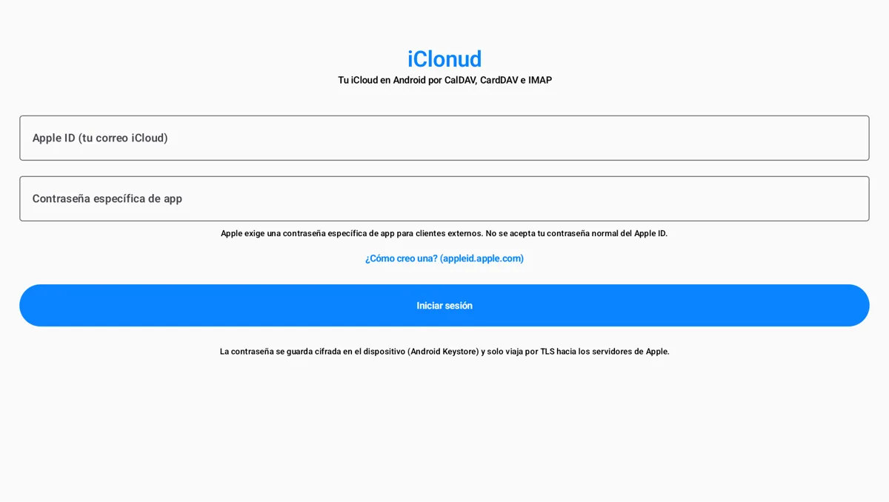

Correo, calendario y contactos de iCloud en Android y en Claude Code. Gratis, de código abierto y sin servidores intermedios.

Lee tu bandeja, busca y envía desde tu dirección de iCloud, por IMAP y SMTP.
Consulta y crea eventos en todos tus calendarios de iCloud, por CalDAV.
Busca y agrega contactos sincronizados con tu iPhone y tu Mac, por CardDAV.
El servidor MCP de iClonud le da a Claude Code 11 herramientas: buscar y leer correos, crear borradores, revisar tu agenda, crear eventos y buscar contactos. Pídele «resume mis correos sin leer de iCloud» o «¿qué tengo el jueves?».
Enviar un correo siempre pasa por tu confirmación.
git clone https://github.com/Killernet2003/iclonud.git claude mcp add --scope user icloud -- \ uv run --quiet --script "$PWD/iclonud/mcp/icloud_mcp.py"
Luego escribe tu Apple ID y una contraseña específica de app en ~/.config/iclonud-mcp/credenciales.env. Guía completa.
iClonud se conecta solo a los servidores de Apple, por TLS. No hay backend propio, ni analítica, ni cuentas nuevas.
Usas una contraseña específica de app, el método oficial de Apple para clientes externos: tu contraseña principal nunca se escribe en la app y puedes revocar el acceso en un clic desde account.apple.com.
| Servicio | ¿Incluido? |
|---|---|
| Correo | Sí · IMAP/SMTP |
| Calendario | Sí · CalDAV |
| Contactos | Sí · CardDAV |
| Notas, Fotos, Drive, Recordatorios, Buscar | Por iCloud.com, desde la pestaña iCloud de la app |
Para esos servicios, usa Accesos iCloud, nuestro lanzador web de iCloud.com.
En account.apple.com → Inicio de sesión y seguridad → Contraseñas de aplicaciones.
Escribe tu Apple ID y esa contraseña. Listo.